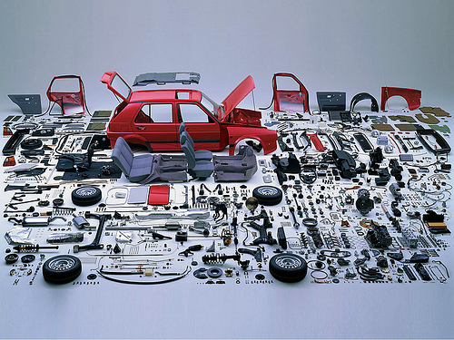

On literate programmingA friend and I had a discussion about the current trends of programming methodologies. At some point, the topic turned to Literate Programming (LP). I personally have written a non-trivial literate program (in CWEB) a few years back, but like many other people, I did not persevere. As a hindsight, there are some good reasons why people do not adopt LP. Missing the big picture Although we love books, they may not be the best medium for documenting programs. Programs are much like circuits or cars. They are very complex systems with interconnected parts. The interactions and constraints among the parts can't really be understood when they are taken apart. LP systems usually segments the program into small pieces and rearrange them into a book-like order. This is like taking a car apart when teaching car-making. There is a huge loss of structural information in this rearrangement. It may be useful to take some parts out for explanations and experiments, but they should be placed back immediately after examination. The student must have a clear view of the overall structure of the car. If we take all the parts out and lay them along the road, the student would have trouble figuring out how they would fit and work together. In short, the student see trees and not the forest when reading a book generated by Literate Programs. Programs are not textLP systems usually allow programmers to fragment a program into small pieces, reorder the pieces into an order that is "convenient to the human mind". Later on, a program (weave) generates printable documentation for the program; another program (tangle) assembles the fragments into machine-executable code. However, these systems have a big problem --- treating programs as text. LP systems usually don't parse the programs. They just segment the code textually. This often messes up the variable scopes and causes subtle bugs. This is much like macros in early Lisps and C, extremely dangerous and error-prone. There are other kinds of LP systems such as Literate Haskell, CoffeeScript etc. They don't break up the procedures and don't have the above "hygiene problem". But because we already have the freedom to rearrange the order of procedures in any programming language, those systems are nothing more than a fancy comment facility like JavaDoc. In views of authentic literate programmers, those systems miss the essence of LP. Human supremacy, human languages and human cognitionLP systems rely their arguments on a biased belief in human supremacy, an overemphasis in human languages, and a misunderstanding of human cognition. Practice has shown that the human brain is incapable of competing with computers in anything that requires rigorous reasoning and perseverance. Natural languages are woefully inaccrurate and confusing for programming. Programming languages that tries to mimic natural languages are doomed to suffer the same "design flaws" of natural languages (for example COBOL and SQL). It is also doubtful whether the order set by literate programming is suitable for human cognition at all. Programs should be constructed in an order that matches the nature of the concept it models, and not in the order of a particular person's way of thinking, nor in the arbitrary order set by a compiler. Once the program structure matches nature, it will immediately appeal to human understanding. So instead of investing in LP, a probably better direction is to investigate better ways of representing programs that enable them to match the concepts more naturally. Functional Programming and Logic Programming are gradually moving toward this direction. Painful code navigationOnce the code is weaved into a book, it will be very hard to navigate through. Several years ago, I spent some time reading Knuth's MMIXware, a book generated from a CWEB program. I noticed how much time I spent on finding definitions and cross-references of variables. Although Knuth painstakingly constructed an index for the book, obviously I still had to turn hundreds of pages back and forth, while in IDEs I can jump to the definition of a variable with just one keystroke. One should wonder why we bother publishing code as books at all. Use an IDE and save the trees! :) From these observations, it is really unclear how literature and books can serve as a good medium for programs. The world has changed and technology advanced, instead of pursuing something static and classic, we may just need to open our minds to new kinds of media. |